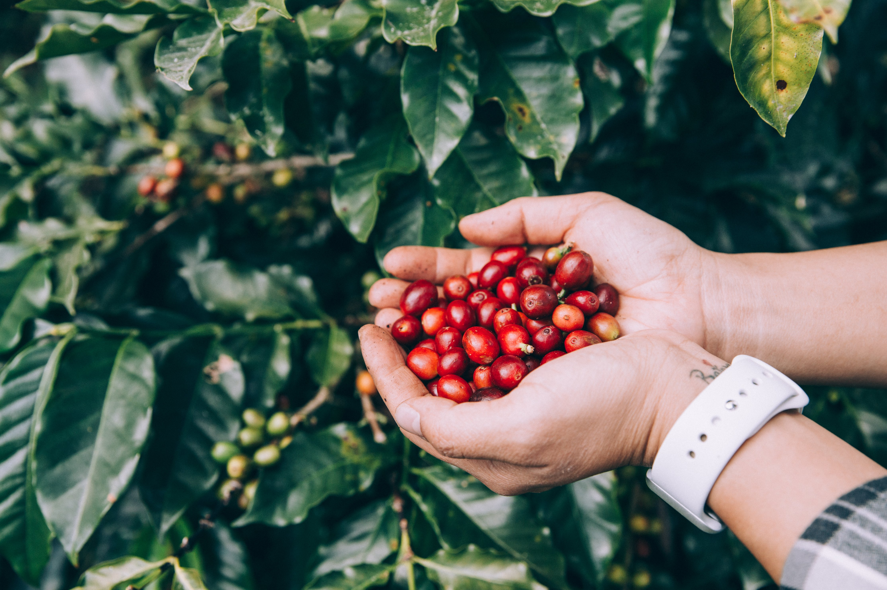
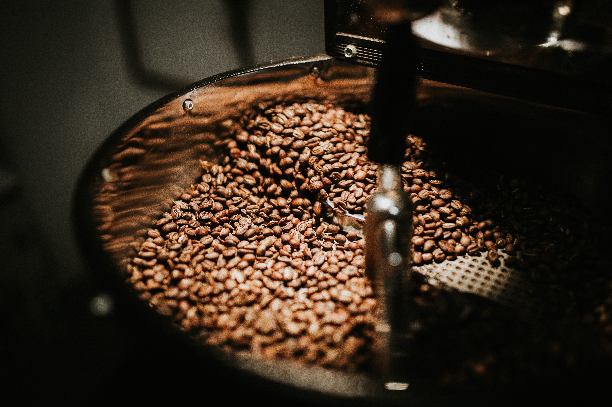

Vai um café?
um blog sobre o incrível mundo do café


O plantio do café deve ser inciado no período de chuvas, quando o solo está úmido, após uma análise do solo, serão aplicados adubos e será feito controle de pragas e doenças . Quando os grãos estiverem de tom cereja, estão prontos para colheita, embora algumas variedades podem apresentar um tom amarelo na fase madura.
Logo após a colheita, o processo deve ser rápido para evitar a deterioração. Dependendo do local e dos recursos, existem dois métodos para a fermentação. O mais antigo e tradicional é o de secagem ao sol, em que o café é colocado em redes e revirado durante o dia para que seque por igual, sendo coberto durante a noite. Conhecido como método seco e natural, pode levar semanas, e possibilita a fermentação benéfica entre a casca e o grão.
O outro método envolve água e maquinário, e se baseia na separação da polpa e do grão. A polpa é lavada com água. Os grãos são separados por peso ao serem colocados em canais de água. Os mais leves flutuam para o topo, enquanto os grãos maduros, mais pesados, afundam. Em seguida, eles passam por uma série de tambores rotativos que os separam por tamanho. Depois, os grãos são transportados para tanques de fermentação cheios de água. Dependendo de uma combinação de fatores que envolve grãos, clima e altitude, eles permanecerão nestes tanques entre 12 e 48 horas. A finalidade deste processo é remover a camada lisa de mucilagem que ainda está ligada ao grão. Enquanto os grãos descansam nos tanques, enzimas naturais que se formam no processo farão com que esta camada se dissolva. Quando a fermentação está completa, os grãos estarão em estado bruto e ásperos ao toque. Nesse momento, eles são lavados em canais de água adicionais.
Então é hora da secagem, que pode acontecer ao sol usando mesas de secagem ou pisos, onde eles são remexidos com constância. Eles também podem ser secos em máquinas.
O café será torrado em altíssima temperatura numa máquina que gira, para que os grãos não queimem. Esta etapa já é feita próxima a venda, que costuma ser em sacas de 60kg. O café será provado, receberá notas, e então será distribuído para venda. Algumas micro torrefações comprarão café ainda verde, visto que deve ser consumido o quanto antes após relizar a torra. O café deve ser então moído de acordo com o método de extração desejado, e pode ser preparado das mais diversas maneiras.
A preparação do café é uma arte, assim como a gastronomia, a confeitaria e a coquetelaria. A pessoa barista é a última etapa no ciclo do café antes do consumo. Eé responsável pela moagem, extração perfeita do café, e pela preparação de diversas bebidas com café. Sendo muitas vezes o barista chefe também responsável pela criação de cardápios. O café pode ser espresso ou coado em muitas variações, sendo em algumas receitas infusionado, ou até mesmo cozido e servido com a borra como na receita turca. Nas variações de café e leite, normalmente o espresso é utilizado.
O pó de café é fervido em infusão na água, por 3 vezes seguidas, tradicionalmente na areia sobre lenha./p>

Metódo de extração coado num filtro especial.

Bebida feita com água tônica e uma dose de espresso.
O café é uma planta originária do continente africano, das regiões altas da Etiópia (Cafa e Enária), onde ocorre espontaneamente como planta de sub-bosque. A região de Cafa pode ser a responsável pelo nome café. Segundo uma das "lendas" da descoberta do cafeeiro, um pastor etíope foi quem percebeu que algumas de suas cabras mudaram seu comportamento após fazer uso de folhas da planta de café em sua alimentação, influenciando no comportamento de monges que o observaram. Da Etiópia foi levado para a Arábia. Os árabes tentaram manter o privilégio, pois foram os primeiros a cultivar essa planta "milagrosa" que assumia grande importância social devido ao seu uso na medicina da época para a cura de diversos males. Da Arábia o café foi levado primeiramente para o Egito no século XVI e logo depois para Turquia.
Segundo um dos mitos, foi um pastor etíope, de nome Kaldi, quem percebeu que havia algo diferente nas plantas da região. Ele havia alimentado suas cabras com arbustos e folhagens que tinham um fruto amarelo-avermelhado e notou que os animais ficaram mais animados e com energia, a medida em que mastigavam os frutos. Intrigado com o comportamento de suas cabras, ele levou uma amostra da planta para um monge. O religioso, inicialmente, não aprovou e a denominou como “o trabalho do diabo”. A segunda chance foi dada depois que as plantas foram jogadas na fogueira e os monges sentiram o aroma dos grãos torrados.